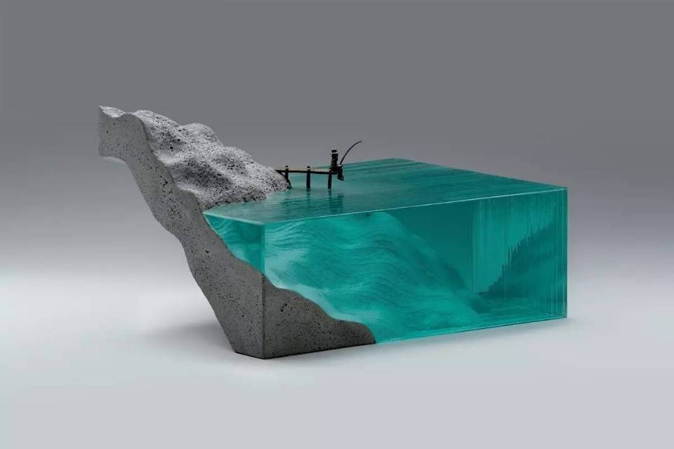

工艺（ technology/craft）是指劳动者利用各类生产工具对各种原材料、半成品进行加工或处理，最终使之成为成品的方法与过程。
文学，是一种用口语或文字作为媒介，表达客观世界和主观认识的方式和手段。需要注意的是，不是所有文学都属于艺术。当文字不单单用来记录（史书、新闻报道、科学论文等），而被赋予其他思想和情感，并具有了艺术之美，才可称为文学艺术，属于语言艺术。
影视是以拷贝、磁带、胶片、存储器等为载体，以银幕、屏幕放映为目的，从而实现视觉与听觉综合观赏的艺术形式，是现代艺术的综合形态
游戏是所有哺乳类动物，特别是灵长类动物学习生存的第一步。它是一种基于物质需求满足之上的，在一些特定时间、空间范围内遵循某种特定规则的，追求精神世界需求满足的社会行为方式.
音乐是一种艺术形式和文化活动，其媒介是按时组织的声音。音乐的英文music源于希腊语 μουσική（mousike， 缪斯艺术）。
摄影一词是源于希腊语φῶς phos（光线）和 γραφι graphis（绘画、绘图）或γραφή graphê，两字一起的意思是”以光线绘图”。摄影是指使用某种专门设备进行影像记录的过程，一般我们使用机械照相机或者数码照相机进行摄影。
舞蹈 是一种表演艺术，使用身体来完成各种优雅或高难度的动作，一般有音乐伴奏，以有节奏的动作为主要表现手段的艺术形式。
戏剧，指以语言、动作、舞蹈、音乐、木偶等形式达到叙事目的的舞台表演艺术的总称。